Planeten erkunden
Verschiedene Planetenbilder
Verschiedene Arten von Planeten sehen jeweils anders aus. Dieser Abschnitt ist ein Glossar der Planetenbilder.
Ein kolonisierter, rentabler Planet
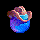
Dies ist ein Planet, auf dem Ihre Bevölkerung so weit gewachsen ist, dass sie sich selbst tragen kann. Er kann sogar Geld für Ihre interstellaren Unternehmungen liefern. Ihr Heimatplanet ist so einer.
Ein potenziell rentabler Planet
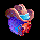
Ein Planet dieser Kategorie kann mit genug Zeit und Mühe eines Tages rentabel werden. Damit er rentabel wird, müssen Sie ihn terraformen, bis er nahe an 72 liegt, und der Bevölkerung Zeit zum Wachsen geben.
Ein bedingt bewohnbarer Planet
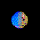
Ein Planet zwischen 0,4 und 0,5 G oder zwischen 2,0 und 2,5 G fällt in diese Kategorie. Mit der Zeit lässt sich ein solcher Planet rentabel machen. Dennoch wird er nie sehr rentabel, also ist es oft am besten, einen solchen Planeten abzubauen und ihn dann zu verlassen.
Ein unwirtlicher Planet
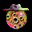
Ein Planet mit einer Schwerkraft über 2,5 G oder unter 0,4 G lässt sich fast unmöglich rentabel machen. Trotzdem kann es in seltenen Fällen aus strategischen Gründen eine gute Idee sein, einen solchen Planeten zu behalten. Ansonsten bauen Sie einfach sein ganzes Metall ab und „verlassen“ ihn – terraformen Sie ihn gar nicht erst.
Ein abgebauter, unwirtlicher Planet
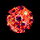
Ein solcher Planet wird nie Gewinn abwerfen und hat kein Metall, das Sie abbauen könnten. Igitt! Sofern er keine strategische Bedeutung hat oder Sie dort keinen feindlichen Stützpunkt fürchten, lassen Sie diesen Schrott einfach in Ruhe.
Ein unerforschter Planet
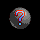
Dies ist ein Planet, auf dem Sie noch nie waren.
Ein bald erforschter Planet
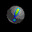
Schicken Sie eine Flotte zu einem unerforschten Planeten, wird aus dem Fragezeichen ein Ausrufezeichen, damit Sie wissen, dass Sie bald mehr wissen. Haben Sie im Dialog „Einstellungen“ „Flottenwege anzeigen“ eingeschaltet, sehen Sie eine Linie für die Flotte, die auf diesen Planeten gerichtet ist.
Ein feindlicher Planet
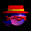
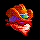
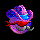
Jeder Planet, an dem Sie einen Kampf verlieren, wird zum feindlichen Planeten. Ein Planet bleibt so lange feindlich, bis Sie eine weitere Flotte dorthin schicken und einen Kampf gewinnen. Es kann sogar sein, dass Sie eine Flotte zu einem feindlichen Planeten schicken und dort niemanden oder einen anderen Feind antreffen. Alle Informationen über Planeten beruhen darauf, wann Sie zuletzt dort waren. Ist es lange her, dass Sie an einem bestimmten Planeten waren, kann Ihre Information über ihn veraltet sein.
Feindliche Planeten sehen aus wie allerlei Bösewichte. Jeder feindliche Spieler hat sein eigenes Aussehen, sodass Sie erkennen, gegen wen Sie wo kämpfen.
Ein verbündeter Planet
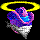
Wenn Sie sich mit einem anderen Spieler verbünden, ändert sich sein Symbol auf der Sternkarte entsprechend. Sein Symbol wird heller, und er bekommt einen „Heiligenschein“ über dem Kopf, denn er ist jetzt ein Guter.
Ein Kampfplanet
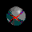
Gelegentlich schicken Sie eine Flotte zu einem Stern, auf dem Sie noch nie waren, und treffen auf eine feindliche Flotte von ähnlicher Stärke wie Ihre. Werden Sie und der Feind beide vernichtet, bekommen Sie dieses Planetenbild. Es besagt, dass Sie den Planeten noch nicht erforscht haben, aber wissen, dass Bösewichte in der Nähe sind. Sie sehen diesen Planeten auch, wenn Sie einen großen Kampf zweier anderer Spieler an einem Planeten bemerken, den Sie noch nicht erforscht haben.
Satelliten
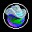
Wenn Sie an einem Planeten Satelliten stationieren, hat dieser Planet auf der Sternkarte einen Kreis um sich, damit Sie wissen, dass er verteidigt wird.
Flotten
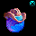
Haben Sie an einem Planeten eine Flotte, erscheint oben rechts am Planeten ein kleines Bild einer Flotte, damit Sie es wissen. Es sieht aus wie ein Mond, aber lassen Sie sich davon nicht täuschen.
Verbündete Flotten
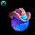
Sehen Sie befreundete Flotten an einem Ihrer Planeten geparkt, haben sie oben links am Planeten ein Flottensymbol (statt oben rechts, wo Ihr Flottensymbol hingehört).
Deutsche Übersetzung des Remakes, keine offizielle, des Handbuchs von Delta Tao. Die Seite auf Englisch (auf Englisch).